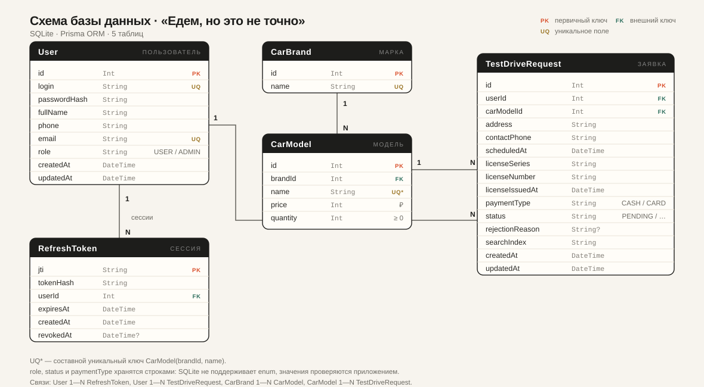

User хранит логин, хеш пароля, ФИО, телефон, email и роль.
RefreshToken связан с пользователем и хранит только хеш токена,
срок действия и признак отзыва.
Схема базы данных портала «Едем, но это не точно»
Пять таблиц описывают пользователей, их сессии, каталог автомобилей и заявки на
тест-драйв. Схема соответствует
back/prisma/schema.prisma и создаётся в SQLite через Prisma.

CarBrand и CarModel связаны один-ко-многим.
Названия моделей уникальны внутри марки: составной ключ
(brandId, name). Поле price хранит
фиксированную стоимость тест-драйва для модели, а quantity —
неотрицательное количество экземпляров этой модели в парке.
TestDriveRequest ссылается на пользователя и модель, хранит
адрес, контактный телефон, дату визита, данные удостоверения, оплату,
статус и причину отклонения.
SQLite не поддерживает enum, поэтому role,
status и paymentType — строки. Допустимые значения
проверяются в приложении и описаны в типах TypeScript.